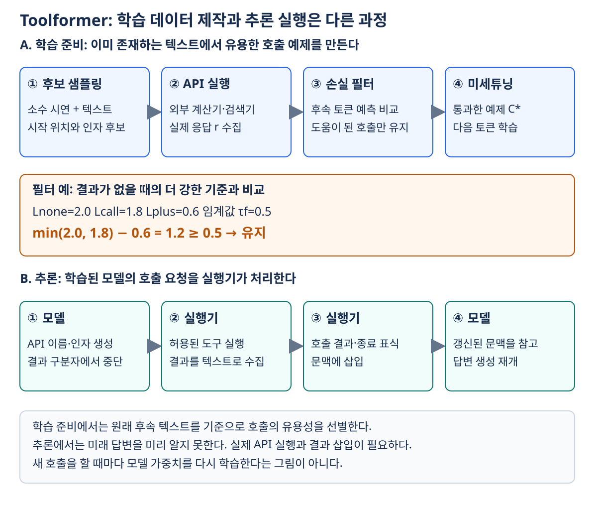
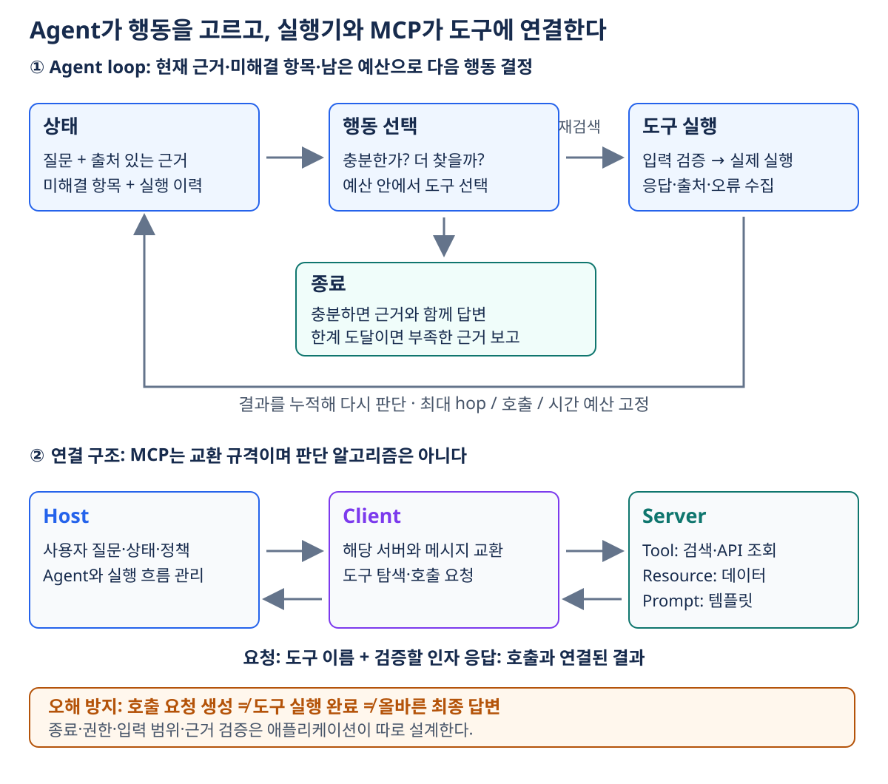

11. 도구 사용과 Agentic RAG
이전: 답변 생성과 근거 관리 · 학습 안내 · 다음: RAG 평가와 운영
검색을 한 번 실행하는 것만으로 해결되지 않는 질문이 있다. 첫 검색 결과에서 얻은 회사명으로 두 번째 자료를 찾아야 하거나, 검색 문서가 서로 충돌하여 다시 확인해야 하는 경우다. 이 장은 언제 검색할지, 무엇을 호출할지, 언제 멈출지를 결정하는 방법을 비교한다. 도구 사용을 학습시키는 Toolformer와, 실행 시 검색·검증을 반복하는 Agentic RAG를 구분한다.
1. 검색이 개입하는 위치는 여러 가지다
| 방식 | 검색 시점과 대상 | 검색 결과를 쓰는 위치 |
|---|---|---|
| 단일 RAG | 질문으로 한 번 passage 검색 | 답변 프롬프트 또는 생성기 입력 |
| 호출 표식 기반 | 생성 중 API 호출 형식 출력 | 도구 결과를 텍스트에 삽입 |
| 불확실성 기반 | 생성 초안의 낮은 확신을 감지 | 근거 검색 후 해당 내용을 다시 생성 |
| kNN-LM | 현재 생성 상태와 비슷한 과거 상태 검색 | 다음 토큰 확률분포 혼합 |
| 근사 cross-attention | decoder가 참고할 입력 토큰 상태 검색 | attention에 쓸 key/value 후보 선택 |
| Agentic RAG | 도구 결과·근거 상태를 보고 다음 행동 결정 | 여러 검색의 근거를 누적하여 답변 |
kNN-LM과 근사 cross-attention을 ‘문서 몇 개를 프롬프트에 넣는 RAG’와 같은 처리로 이해하면 안 된다. 데이터가 개입하는 층위가 다르다.
불확실성으로 검색을 시작하기: FLARE
FLARE는 다음에 쓸 문장을 먼저 예측하고, 낮은 확신의 토큰이 있으면 그 예측 내용을 활용해 자료를 검색한 뒤 문장을 다시 생성하는 접근이다. 여기서 토큰 확률은 모델의 확신 신호이지 사실이 참일 확률이 아니다. 자신 있게 틀리는 경우에는 검색을 시작하지 못할 수 있다. FLARE 원논문
다음 토큰 분포를 보강하기: kNN-LM
과거 텍스트의 문맥 표현을 key, 그 다음 실제 토큰을 value로 저장했다고 하자. 현재 문맥 표현 h와 가까운 key들을 찾고, 가까울수록 높은 가중치를 준다.
d는 거리, τ>0은 온도, λ∈[0,1]는 혼합 비중이다. 같은 다음 토큰을 가진 이웃들의 가중치는 더한다. pLM(서울)=0.2, pkNN(서울)=0.7, λ=0.5라면 최종값은 0.45다. 검색 문장을 사람이 읽을 컨텍스트로 넣지 않고 분포 자체를 바꾼다. 이웃 저장소의 도메인·정답 토큰 품질이 중요하다. kNN-LM 원논문
Attention 후보를 검색하기: Unlimiformer
긴 입력의 토큰 표현을 인덱스에 저장하고, decoder cross-attention에서 모든 입력 토큰을 살피는 대신 관련 top-k 상태를 검색한다. 조회된 상태가 attention의 key/value 후보가 된다. 핵심은 attention 내적을 벡터 검색과 연결하는 것이다. 검색한 후보만 참고하므로 전체 attention과 결과가 같다고 보장되지는 않는다. ‘입력을 무한히 늘려도 계산·메모리가 공짜’라는 의미도 아니다. Unlimiformer 원논문
위 세 방법은 검색 시점과 개입 위치가 다르다. 다음 절의 Toolformer는 이 중 호출 표식 기반 접근을 자세히 다룬다.
2. Toolformer: 도구가 도움이 된 예제를 만들어 학습하기
Toolformer의 목표는 계산기·질의응답·Wikipedia 검색·번역·달력 같은 도구를 언제, 어떤 인자로 호출할지 언어 모델이 배우도록 하는 것이다. API 입출력을 텍스트로 표현하면 원래 언어 모델 학습 데이터 사이에 호출을 삽입할 수 있다.
일반 텍스트 C
→ 도구별 소수 예시를 넣은 프롬프트로 호출 후보 생성
→ 실제 API 실행
→ 결과가 뒤의 원문 토큰 예측을 돕는지 손실로 필터링
→ 통과한 호출·결과를 원문에 삽입한 C*
→ C*로 언어 모델 미세튜닝
사람이 모든 정답 호출 위치를 표시하지 않는다는 의미에서 자기지도 방식이다. 그렇다고 사람이 전혀 개입하지 않는 것은 아니다. 도구·형식·소수 시연·필터 기준은 사람이 정한다. 이 장의 수량 계산과 도식은 흐름을 설명하는 예제이며 실제 모델의 확률을 측정한 값은 아니다.
2.1 호출 후보 샘플링
원문 토큰열 x₁,…,x_n과 API별 프롬프트 P(x)를 준비한다. 프롬프트에는 호출 예시가 들어 있다. 각 위치 i의 원문 앞부분을 조건으로 호출 시작 표식의 확률을 구한다.
샘플링 임계값 τs를 넘는 위치 중 최대 k개를 고른다. 각 위치에서 최대 m개의 호출 인자를 샘플링한다. 도구 하나에 대한 후보 수의 상한은 k×m이다. 이때 k는 검색할 문서 수가 아니라 호출을 삽입할 위치 수다.
예를 들어 ‘총 18상자에 상자당 24개가 있으므로 총 432개다’라는 텍스트에서 432 앞에 Calculator(18*24)를 넣는 후보가 만들어질 수 있다. 결과가 원문의 다음 내용을 예측하기 쉽게 하는지 나중에 확인한다. 호출 시작 확률이 높다는 이유만으로 유용성이 확정되지 않는다.
고정된 프롬프트 P(x)에 대해 위치별 확률은 원문 앞부분을 한 위치씩 재입력하는 대신, teacher forcing한 출력 원문의 각 위치 logits에서 함께 읽을 수 있다. Causal mask는 출력 쪽의 미래 토큰을 가리지만, 프롬프트 자체에 주어진 정보까지 숨기지는 않는다. 원논문의 후보 생성 프롬프트는 Input: x에 전체 원문을 넣으므로 데이터 제작 중에는 뒤의 내용도 참고할 수 있다. 이는 추론 때 아직 생성하지 않은 미래 문장을 볼 수 있다는 뜻이 아니다. 원논문은 번역 도구의 경우 뒤에서만 등장한 텍스트를 인자로 쓴 호출을 추가로 제거하여 이 차이를 다룬다. 원논문 Appendix A.1·A.2
여러 위치의 시작 확률을 함께 평가할 수 있어도, 후보 인자의 자기회귀 생성·여러 후보 sampling·외부 API 실행까지 한 번의 forward로 끝나는 것은 아니다.
표식과 어휘집의 차이: <API> 같은 개념상 호출 표식을 표시한다고 신규 token ID를 반드시 추가하는 것은 아니다. Toolformer는 기존 토큰열 [, ], ->를 사용하여 어휘집을 바꾸지 않았다. 개념상의 ‘특수 표식’과 실제 신규 어휘 추가를 구분한다. Toolformer 원논문 §2
2.2 후보 API 실행
모델이 만든 호출 문자열을 파싱하고 실제 도구를 실행해 결과 r을 얻는다. 모델은 18*24라는 인자를 만들지만 계산기 실행은 외부 프로그램이 담당한다. 이름이 없는 도구·잘못된 인자·실패 응답은 유효한 결과로 간주하지 않는다.
모델이 만든 후보 c 도구 결과 r 검증할 원문 후속 내용
Calculator(18*24) "432" "432개다"
QA("상자의 재질은?") "종이" "432개다"
두 결과 모두 문장으로는 자연스러울 수 있으나, 현재 원문의 후속 숫자 예측에 유용한 것은 다르다.
2.3 미래 원문 토큰 손실로 필터링
호출 위치 이후의 원래 텍스트를 얼마나 잘 예측하는지 비교한다. 호출 결과의 문장 자체가 그럴듯한지를 판정하는 점수가 아니다. 삽입 정보 z가 주어졌을 때의 가중 교차엔트로피를
로 둔다. w는 가까운 후속 토큰에 더 비중을 주는 가중치다. 공정한 비교를 위해 같은 원문 토큰·같은 가중치로 세 조건을 평가한다.
| 조건 | 제공하는 정보 | 의미 |
|---|---|---|
Lnone |
호출 없음 | 모델만으로 가능한 예측 |
Lcall |
호출 인자만 제공 | 질문·계산식 자체가 주는 힌트 |
Lplus |
호출과 실제 결과 제공 | 결과까지 얻었을 때의 예측 |
Δ≥τf일 때 유지한다. 예를 들어 Lnone=2.0, Lcall=1.8, Lplus=0.6, τf=0.5이면 개선은 1.8−0.6=1.2라 통과한다. 반면 Lplus=1.6이면 개선 0.2로 탈락한다. 호출의 말투만 바뀌어 좋아진 것을 결과의 효과로 오인하지 않도록 더 강한 no-result 기준을 사용한다.
필터 식은 각 기호의 역할을 먼저 고정한다. 결과 없이 얻는 최선의 예측과 결과를 얻었을 때를 비교하므로 min(no-call, call-only)−with-result다. 결과가 있는 항과 없는 항을 섞어 최소를 취하면 이 비교의 의미가 달라진다. 원논문은 아직 미세튜닝하지 않은 모델의 텍스트 흐름을 깨지 않도록 필터 점수 계산 때 호출·결과를 prefix로 제공한다. 통과한 예제를 학습 데이터 중간에 넣는 단계와 구별한다.
2.4 데이터 구성과 미세튜닝
필터를 통과한 호출과 결과를 해당 위치에 넣는다.
원문: 총 수량은 432개다.
증강: 총 수량은 [Calculator(18*24) -> 432] 432개다.
여러 도구에서 얻은 예제를 합친 C*로 다음 토큰 예측 학습을 한다. 원문 내용은 유지하면서 호출 패턴을 배운다는 점이 핵심이다. 이는 매 답변마다 모델 파라미터를 학습하는 온라인 agent loop가 아니다. 후보 생성·도구 실행·선별은 학습 데이터 제작 단계다.
2.5 추론: 모델과 실행기의 역할 분담
모델이 호출 인자를 생성하고 결과를 기다리는 구분자까지 내면 실행기가 생성을 일시 중단한다. 실행기가 API를 호출하고 결과·종료 표식을 붙인 뒤 모델 생성을 재개한다. 모델이 적은 ‘432’와 실제 계산기가 반환한 ‘432’를 구분할 수 있도록 호출 로그를 남긴다.
Toolformer의 손실 필터는 도구 결과가 모델의 텍스트 예측에 유용했는지를 측정한다. 데이터의 진실성, 권한, 비용, 여러 단계 계획의 성공까지 보증하지 않는다. 도구 사용을 배웠다고 임의 API를 자동으로 이해하거나 최신 정보를 항상 올바르게 판단하는 것도 아니다.
Toolformer의 연구는 GPT-J 6.7B 기반 모델을 사실·산술·질의응답·다국어·시간 관련 과제와 언어 모델링에서 평가했다. 비교에서는 같은 base model의 추가 학습, 도구 사용 허용·비허용 여부, 더 큰 모델과의 설정 차이를 함께 확인해야 한다. 일부 과제에서 큰 모델보다 좋은 결과를 얻었다는 관찰을 모든 QA나 모든 도구의 우위로 넓히지 않는다. 호출이 남는 빈도와 실제 과제 성능도 서로 다른 지표다. 이런 연구 결과를 읽을 때는 평가 과제·도구·학습량이 같은지 확인해야 한다.

그림 읽기: 그림 위쪽은 이미 존재하는 텍스트에 유용한 호출을 넣어 학습 데이터를 만드는 과정이고, 아래쪽은 학습된 모델을 사용하는 과정이다. 필터 예에서는 호출 결과가 loss를 1.2 줄여 유지된다. 추론의 실행기는 결과를 실제로 가져와야 하며, 모델이 호출 문자열을 출력한 것만으로 실행이 끝난 것은 아니다.
3. Agentic RAG: 실행 결과를 보고 다음 행동을 선택하기
단일 RAG는 정해진 순서로 검색 후 답한다. Agentic RAG는 현재 근거 상태를 보고 재검색·다른 도구·종료를 선택한다. 상태에는 최소한 원질문, 이미 얻은 근거와 출처, 아직 모르는 항목, 실행 이력·예산이 필요하다.
질문 ‘A사를 인수한 회사의 본사 도시는?’를 예로 들자.
| 단계 | 확인된 내용 | 다음 행동 |
|---|---|---|
| 시작 | A사 이름만 있음 | A사 인수 자료 검색 |
| 검색 1 | B사가 인수했다는 근거 확보 | B사 본사 자료 검색 |
| 검색 2 | 본사는 부산이라는 근거 확보 | 두 관계를 연결해 답변 |
| 검증 | 회사명·시점·두 출처 일치 | 근거와 함께 종료 |
첫 검색의 ‘B사’가 다음 질의의 입력이 된다. 서로 독립인 검색은 병렬로 할 수 있지만, 이 예제의 두 번째 검색은 첫 결과에 의존하므로 순서가 필요하다.

그림 읽기: 그림 위쪽의 되돌아오는 화살표는 새 관측과 출처를 상태에 더하는 경로다. 가운데 아래로 내려가는 화살표는 종료다. 근거가 충분한 종료와, 예산이 끝나 부족한 근거를 보고하는 종료를 구분한다. 아래쪽 MCP 연결은 이 판단을 대신하지 않고 요청과 결과를 전달한다.
반복을 구현할 때는 최대 hop·총 호출 수·시간·토큰 예산, 같은 질의 반복 감지, 도구 오류 처리, 근거가 없을 때의 종료 규칙이 필요하다. 마지막 hop이라고 ‘추측해서라도 답하라’고 바꾸면 거절 능력이 무너질 수 있다.
4. 주요 패턴은 무엇이 다른가
| 패턴 | 핵심 결정 | 실패하기 쉬운 부분 |
|---|---|---|
| ReAct | 행동을 정하고 도구의 관측 결과를 반영해 다음 행동 선택 | 관측 오류를 사실로 확정하거나 같은 행동 반복 |
| Self-reflection loop | 검색·답변의 충분성·근거성을 평가하고 수정 | 자기평가가 자신 있게 틀릴 수 있음 |
| Corrective RAG | 검색 결과 품질 평가에 따라 보강·웹 검색 등 다른 경로 선택 | evaluator 오류·보강 자료의 신뢰성 |
| Plan-and-Execute | 하위 작업 계획을 세우고 실행·통합 | 초기 계획의 누락과 작업 간 의존성 처리 |
원래 Self-RAG 논문은 reflection token을 생성하도록 학습한 모델을 다룬다. 이 장의 반복 검색 예제와 다음 장의 비교 사례는 매 hop의 충분성 판단을 이용한 실행 흐름이다. 학습 방식까지 동일하게 재현했다고 해석하지 않는다. Self-RAG 원논문
또한 CRAG는 이 문맥에서 Corrective Retrieval Augmented Generation이라는 기법명이지만, 실습 데이터셋에서는 Comprehensive RAG Benchmark의 약자다. 평가 데이터와 검색 보정 알고리즘을 혼동하지 않는다. Corrective RAG 원논문
구현 로그에는 도구 이름·인자·관측·채택한 출처·종료 사유를 남기면 흐름을 점검할 수 있다. ReAct의 모든 중간 서술을 사용자에게 노출해야 도구가 작동하는 것은 아니다. ReAct 원논문
5. Tool Use와 MCP는 같은 기능이 아니다
모델에 도구 이름, 설명, 입력 schema를 주면 모델은 구조화된 호출 요청을 만들 수 있다. 예를 들어 search_docs(query, category, top_k)를 노출한다. 실행기는 요청을 검증하고 검색기를 실행한 뒤, 호출 ID와 연결한 결과를 모델에 돌려준다. 도구 요청 자체는 검색을 실행한 결과가 아니다.
MCP는 도구·데이터를 연결하는 프로토콜이다. 어떤 검색이 좋은지, 언제 재검색할지 결정하는 알고리즘은 아니다. 개념상 역할은 다음과 같다.
| 구성 | 역할 | RAG 예시 |
|---|---|---|
| Host | AI 애플리케이션 전체와 연결 관리 | 사용자 질문을 받는 앱 |
| Client | 해당 서버와 프로토콜을 주고받는 구성 | 검색 서버 연결 담당 |
| Server | 데이터·도구 등의 기능을 제공 | 사내 검색·재무 KG 서버 |
| Tool | 호출 가능한 기능 | 문서 검색, 재무 API 조회 |
| Resource | 읽을 수 있는 데이터 | 스키마·문서 내용 |
| Prompt | 재사용할 상호작용 템플릿 | 특정 분석을 위한 질문 틀 |
공통 규격 덕분에 서버별 연결 코드를 재사용하기 쉬워진다. M×N→M+N은 통합 구조의 직관이며 실제 구현 공수가 정확히 선형이라는 보장은 아니다. 검색 권한·인자 범위·응답 크기·오류 처리는 여전히 애플리케이션에서 설계해야 한다. MCP 공식 아키텍처
SDK와 프로토콜의 실행 코드는 버전에 따라 달라진다. 여기서는 특정 실행 명령 대신 요청 생성·입력 검증·도구 실행·결과 반환의 역할을 분리해 이해한다.
6. 추가 호출이 이득인지 판단하기
Agentic RAG의 이득은 실제로 근거를 더 찾거나 오류를 줄였을 때 생긴다. 호출 수가 늘었다는 사실만으로 추론 품질이 좋아지는 것은 아니다. 12장에서는 답을 찾은 경우와 모른다고 해야 하는 경우를 나눠 측정한다.
| 관측 | 가능한 해석 | 확인할 기록 |
|---|---|---|
| 검색 횟수 증가, 정답률 동일 | 반복이 중복일 수 있음 | 새로 추가된 근거와 질의 중복 |
| multi-hop 개선, 무응답 질문 악화 | 마지막 답변 강요 가능성 | 거절 규칙과 hop별 근거 |
| 도구 호출 성공, 답변 오류 | 호출 성공과 해석 성공은 다름 | 인자·응답·최종 주장 연결 |
| 평가상 이득, 운영 지연 악화 | 직렬 단계·실행기 overhead | 단계별 시간과 독립 작업 여부 |
7. 확인 질문과 해설
- Toolformer의 호출 시작 확률이 높으면 해당 후보를 바로 학습에 넣어도 되는가?
Lnone=1.3,Lcall=0.8,Lplus=0.6,τf=0.5라면 호출은 유지되는가?- kNN-LM은 검색한 문서를 프롬프트에 추가하는가?
- 최대 hop까지 근거를 못 찾으면 무조건 최선의 추측을 답해야 하는가?
- MCP를 도입하면 검색 결과의 사실성과 agent 종료가 자동으로 보장되는가?
해설
- 아니다. 실제 실행 결과가 후속 원문 토큰의 손실을 줄이는지 필터링한다.
- 아니다. 더 강한 no-result 기준은 0.8이고, 개선 0.2는 임계값보다 작다.
- 아니다. 유사 상태의 다음 토큰 분포와 LM 분포를 혼합한다.
- 아니다. 미확인 상태를 유지하고 확인된 범위·부족한 근거를 보고하는 종료가 필요하다.
- 아니다. MCP는 연결 규격이며 검색·판단·권한·종료 정책은 별도다.
8. 개념 연결
검색이 개입하는 위치부터 Toolformer의 학습 흐름, 실행 중 agent loop, MCP 연결 역할까지 이 장의 표와 두 그림으로 비교할 수 있다. 다음 장에서는 추가 검색이 정확성·거절·비용·지연을 실제로 개선했는지 평가한다.